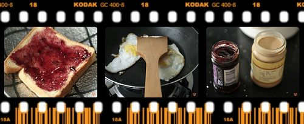

这一周我的早餐几乎没有什么变化：开水煮过的燕麦片、一个鸡蛋、一杯果汁或酸奶、面包片或一只扬州富春包子，某个早晨偶尔吃个西红柿。
煮燕麦片只要3、5分钟，煮过的燕麦片口感润滑； 同时打个水包蛋或煎只荷包蛋； 包子也同时在微波炉里加热； 在超市采购好的酸奶和果汁就在冰箱里。
希望早餐能变变花样，花费时间少又有营养的。 不知道大家每天早餐吃什么？

头天晚上做汤。
沙发.昨天几个好久不见的战友看到我第一句话就是,终于看到你胖了.郁闷,所以,早饭要戒掉.通常是牛奶或豆浆,加肉松面包或甜糕点,再来一根香蕉.呵呵,不吃就心慌.
看鲁豫的采访,她说自己吃了十几年同样的早餐:一碗燕麦片,一根香蕉,一杯酸奶或者一杯咖啡,然后再喝点参茶. 她说自己如果不这样吃,会觉得少了点什么,不舒服. 搭配倒是很合理,我也想这样,不过要坚持下来真不容易.我还是喜欢能够换换口味.
很不正经的的问一句： 姐姐，题头的图片是你吗？~~（脸红害羞掩面而问）
顺便回答问题：俺早上基本不吃，睡醒就该走人了。 如果有时间吃的话，一般楼下卖什么吃什么~
吃的和你一样
你可以尝试自制三明治，土司片放面包机烤3分钟。这三分钟里边切点黄瓜片或者西红柿片，洗两片生菜叶，煎个鸡蛋。把鸡蛋、生菜、西红柿往两片土司当中一夹，就好了。营养又健康，而且方便。还可以加点萨拉酱在当中。
做过面包片夹荷包蛋，不过里面没有蔬菜。 昨天在超市买了蓝莓酱、花生酱和色拉，之前没有的时候就撒了点细盐：） 总感觉早晨切菜很麻烦~
香蕉是抑郁的，早餐吃香蕉有助于一天好心情？有助于一天新陈代谢？
咖啡加空气
一杯酸奶或者纸包装的早餐奶。没别的了。。 减肥。
也在减肥中。不过好像一直早餐都吃不了太多，以前是一杯牛奶加一块点心或涂了果酱的干面包，现在就是两小瓶的酸奶。
i like noodle in the morning!
喝豆浆也不错，天太热吃面包果酱会没有胃口而且腻。 吃香蕉真是会让人快乐，樱桃好象也是会让人心情好的水果！
冰牛奶泡麦片，有时再加一份酸奶。现在吃油腻的早餐，有些不习惯。christina的早餐其实很营养了，又能keep fit。我偏爱面包片涂一层蓝莓酱，再花生酱
christina身材不错
基本不吃，偶尔吃一下也是粗粮，没有这么精细过。
楼上各位同志够“作”的，早晨吃的怪里怪气的~~ 我就喜欢甜豆浆蘸油条~有时候发工资改善生活了就再加一碗辣油小混沌。吃的呼啦呼啦的满头汗~幸福
存档只读，评论已关闭。
Name (required)
Email (will not be published) (required)
Website
« 朝鲜之行 | 橘红色.饰边 »
18 Responses to “早餐”
2008-07-04
头天晚上做汤。
2008-07-04
沙发.昨天几个好久不见的战友看到我第一句话就是,终于看到你胖了.郁闷,所以,早饭要戒掉.通常是牛奶或豆浆,加肉松面包或甜糕点,再来一根香蕉.呵呵,不吃就心慌.
2008-07-04
看鲁豫的采访,她说自己吃了十几年同样的早餐:一碗燕麦片,一根香蕉,一杯酸奶或者一杯咖啡,然后再喝点参茶.
她说自己如果不这样吃,会觉得少了点什么,不舒服.
搭配倒是很合理,我也想这样,不过要坚持下来真不容易.我还是喜欢能够换换口味.
2008-07-04
很不正经的的问一句：
姐姐，题头的图片是你吗？~~（脸红害羞掩面而问）
2008-07-04
顺便回答问题：俺早上基本不吃，睡醒就该走人了。
如果有时间吃的话，一般楼下卖什么吃什么~
2008-07-04
吃的和你一样
2008-07-04
你可以尝试自制三明治，土司片放面包机烤3分钟。这三分钟里边切点黄瓜片或者西红柿片，洗两片生菜叶，煎个鸡蛋。把鸡蛋、生菜、西红柿往两片土司当中一夹，就好了。营养又健康，而且方便。还可以加点萨拉酱在当中。
2008-07-04
做过面包片夹荷包蛋，不过里面没有蔬菜。
昨天在超市买了蓝莓酱、花生酱和色拉，之前没有的时候就撒了点细盐：）
总感觉早晨切菜很麻烦~
2008-07-04
香蕉是抑郁的，早餐吃香蕉有助于一天好心情？有助于一天新陈代谢？
2008-07-04
咖啡加空气
2008-07-04
一杯酸奶或者纸包装的早餐奶。没别的了。。
减肥。
2008-07-04
也在减肥中。不过好像一直早餐都吃不了太多，以前是一杯牛奶加一块点心或涂了果酱的干面包，现在就是两小瓶的酸奶。
2008-07-04
i like noodle in the morning!
2008-07-04
喝豆浆也不错，天太热吃面包果酱会没有胃口而且腻。
吃香蕉真是会让人快乐，樱桃好象也是会让人心情好的水果！
2008-07-05
冰牛奶泡麦片，有时再加一份酸奶。现在吃油腻的早餐，有些不习惯。christina的早餐其实很营养了，又能keep fit。我偏爱面包片涂一层蓝莓酱，再花生酱
2008-07-05
christina身材不错
2008-07-06
基本不吃，偶尔吃一下也是粗粮，没有这么精细过。
2008-07-07
楼上各位同志够“作”的，早晨吃的怪里怪气的~~
我就喜欢甜豆浆蘸油条~有时候发工资改善生活了就再加一碗辣油小混沌。吃的呼啦呼啦的满头汗~幸福
Leave A Reply
存档只读，评论已关闭。